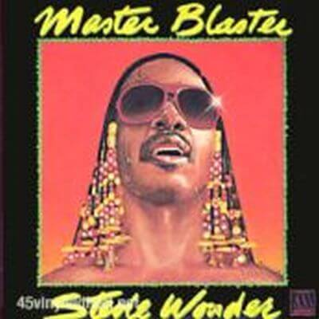

Compositores música * Stevie Wonder
Compositores letra * Stevie Wonder
Producción y arreglos * Stevie Wonder
Músicos * Nathan Watts : Bass, Ben Bridges: Guitars, Dennis Davis: Drums, Earl DeRoen: Percusión, Isaiah Sanders: Organo, Hank Redd: Saxophone, Larry Gittens: Trompeta, M. Holcolm, A.Winbush, S.Brewer, y A.Evans: Background Vocals, Stevie Wonder: todos instrumentos
Video
La canción, con ritmo y estilo reggae, es una oda a la leyenda del reggae Bob Marley. Wonder había realizado varias actuaciones con Marley en su gira por los Estados Unidos en el otoño de ese año 1980. La letra menciona a "los hijos de Jah" y el final de la guerra civil en Zimbabwe.
Fue un gran éxito, pasando siete semanas en el número uno de las listas de singles de Billboard R & B, alcanzando el número cinco en singles pop de Billboard en el otoño de 1980 y alcanzando el número dos en el UK Singles Chart. La canción incluye la letra "hotter than july" que da título al álbum.

Letra
Everyone's feeling pretty
It's hotter than July
Though the world's full of problems
They couldn't touch us even if they tried
From the park I hear rhythms
Marley's hot on the box
Tonight there will be a party
On the corner at the end of the block
Todo el mundo se siente bien.
Se siente más calor que en julio.
Aunque el mundo está lleno de problemas,
no pudieron tocarnos aunque lo intentaron.
Desde el parque oigo ritmos.
Marley (Bob Marley) suena en la caja.
Esta noche va a haber una fiesta,
en la esquina al final del edificio.
Didn't know you
Would be jammin' until the break of dawn
I bet nobody ever told you that you
would be jammin' until the break of dawn
You would be jammin' and jammin' and jammin', jam on
No sabes que tú,
podrías estar petándolo hasta el amanecer.
Apuesto a que nunca nadie te dijo que tú,
podrías estar petándolo hasta el amanecer.
Podrías estar petándolo y petándolo y petándolo, a saco.
They want us to join their fighting
But our answer today
Is to let all our worries
Like the breeze through our fingers slip away
Peace has come to Zimbabwe
Third World's right on the one
Now's the time for celebration
'Cause we've only just begun
Ellos querían que nos uniéramos a su lucha,
pero nuestra respuesta ahora mismo,
es dejar todas nuestras preocupaciones,
como la brisa se escapa a través de nuestros dedos.
La paz ha llegado a Zimbabue,
el Tercer Mundo tiene preferencia sobre el Primero,
ahora es momento de celebración,
porque no hemos hecho más que empezar.
Didn't know that you
Would be jammin' until the break of dawn
Bet you nobody ever told you that you
Would be jammin' until the break of dawn
You would be jammin' and jammin' and jammin', jam on
Bet you nobody ever told you that you
(We're in the middle of the makin's of the master blaster jammin')
Would be jammin' until the break of dawn
I know nobody told you that you
(We're in the middle of the makin's of the master blaster jammin')
Would be jammin' until the break of dawn
We're jammin', jammin', jammin', jam on
No sabes que tú,
podrías estar petándolo hasta el amanecer.
Apuesto a que nunca nadie te dijo que tú,
podrías estar petándolo hasta el amanecer.
Podrías estar petándolo y petándolo y petándolo, a saco.
Apuesto a que nunca nadie te lo dijo
(estamos a mitad de la creación de los "maestros explosivos" petándolo)
podrías estar petándolo hasta el amanecer.
Sé que nadie te le dijo
(estamos a mitad de la creación de los "maestros explosivos" petándolo)
podrías estar petándolo hasta el amanecer.
Podrías estar petándolo y petándolo y petándolo, a saco.
You ask me am I happy
Well as matter of fact
I can say that I'm ecstatic
'Cause we all just made a pact
We've agreed to get together
Joined as children in Jah
When you're moving in the positive
Your destination is the brightest star
Me preguntas si estoy feliz,
vale, la verdad es que,
puedo decir que estoy exultante,
porque todos nosotros acabamos de hacer un pacto.
Hemos acordado reunirnos,
unidos como los hijos de Yavé (Jehová, Dios),
cuando avanzas en positivo,
tu destino es la estrella más brillante.
You didn't know that you
(We're in the middle of the makin's of the master blaster jammin')
Would be jammin' until the break of dawn
I bet you nobody ever told you that you
(We're in the middle of the makin's of the master blaster jammin')
Would be jammin' until the break of dawn
Oh, Oh, Oh, Oh, Oh, you
(We're in the middle of the makin's of the master blaster jammin')
Would be jammin' until the break of dawn
Don't you stop the music, oh no,
(We're in the middle of the makin's of the master blaster jammin')
Na, na na...
(We're in the middle of the makin's of the master blaster jammin')
Nobody told you Oh, Oh, Oh, you
(We're in the middle of the makin's of the master blaster jammin')
Would be jammin' until the break of dawn
I bet you if someone approached you
(We're in the middle of the makin's of the master blaster jammin')
yesterday to tell you that you would be jammin' you would not believe
it because you never thought that you would be jammin'
Oh, Oh, Oh, Oh,
(We're in the middle of the makin's of the master blaster jammin')
jammin' 'til the break of dawn
Oh, Oh, Oh, You may as well believe what you are feeling
(We're in the middle of the makin's of the master blaster jammin')
because you feel your body jammin'
(We're in the middle of the makin's of the master blaster jammin')
Oh, Oh, you would be jammin' until the break of dawn
(We're in the middle of the makin's of the master blaster jammin')
(We're in the middle of the makin's of the master blaster jammin')